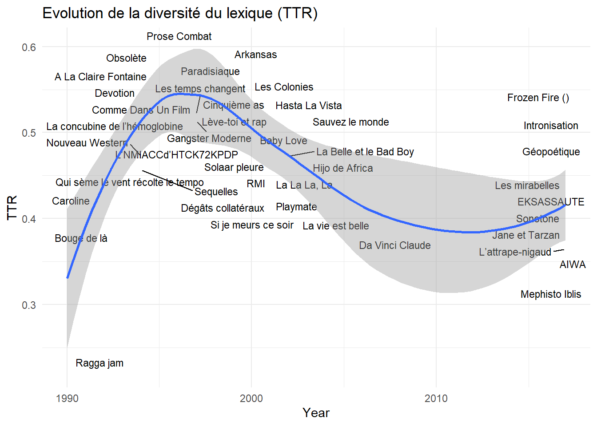
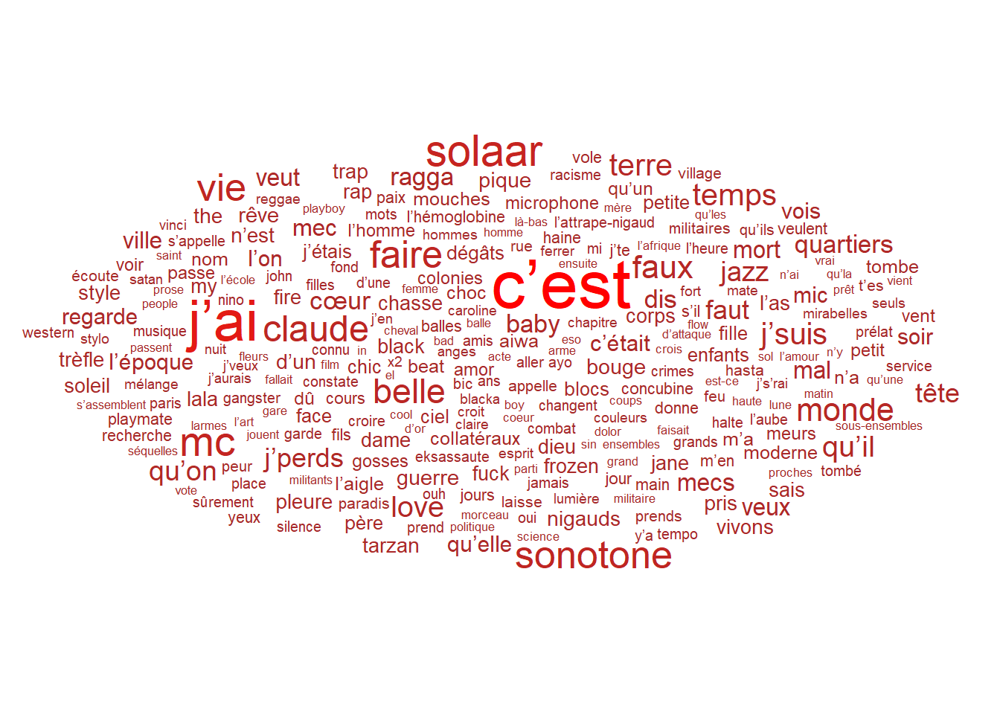
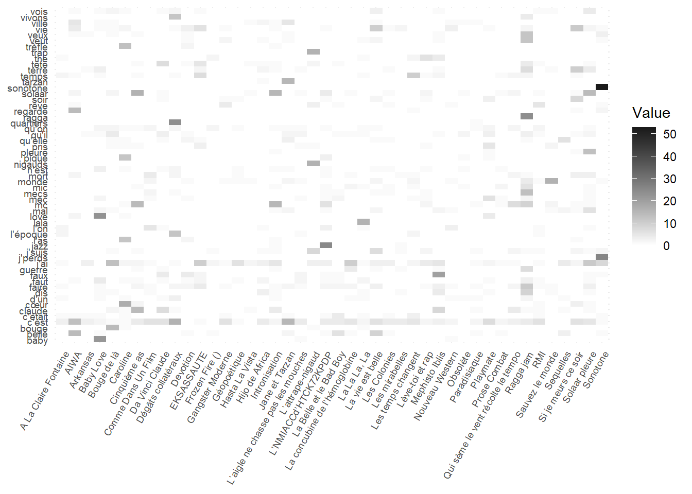
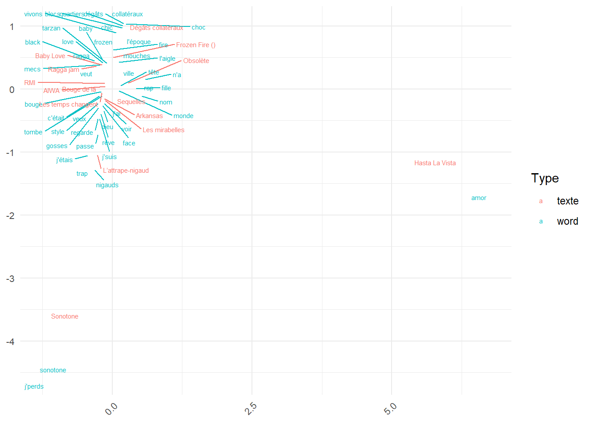

Show the code
###LECTURE du FICHIERS
df <- read_csv("data/RapLyrics.csv",
locale = locale(encoding = "WINDOWS-1252")) |>
filter(Artiste=="MC Solaar")|>
mutate(Paroles=str_remove_all(Paroles, "<U\\+[0-9A-F]{4}>"))#les librairies du chapître
library(tidyverse)
#accessoires de ggplot
library(ggridges)
library(ggrepel)
library(ggwordcloud)
library(igraph)
library(ggraph)
theme_set(theme_minimal())
#NLP
library(tokenizers)
library(quanteda)
library(quanteda.textplots)
library(quanteda.textstats )
## Analyse de données
library(FactoMineR)
library(factoextra)
# glossaire
library(glossary)
glossary_path("glossary.yml")
glossary_style(color = "purple",
text_decoration = "underline",
def_bg = "#333",
def_color = "white")glossary_popup("click")
#glossary_add(term = "hapax", def = "Mot unique dans un corpus donné")
#tableau
library(flextable)
set_flextable_defaults(
font.size = 10, theme_fun = theme_vanilla,
padding = 6,
background.color = "#EFEFEF")
#palettes
library(wesanderson)
#names(wes_palettes)
col_1<-c("#85D4E3")
col_1b<-c("#F4B5BD")
col_2<-c <-c("#85D4E3", "#F4B5BD")
col_4<-c("#85D4E3", "#F4B5BD", "#9C964A", "#CDC08C")Objectifs du chapitre :
Puisque nous savons découper une chaîne de caractères en unités élémentaires, mais aussi en caractériser la nature (POS,…), nous allons apprendre à mieux représenter ces éléments sous formes de tableaux statistiques
Dans ce chapitre, nous allons travailler sur les textes de MC Solaar, soit un ensemble de 44 chansons (et rien n’empêche de mettre le son.
On commence par lire le fichier, en apportant des petites corrections.
###LECTURE du FICHIERS
df <- read_csv("data/RapLyrics.csv",
locale = locale(encoding = "WINDOWS-1252")) |>
filter(Artiste=="MC Solaar")|>
mutate(Paroles=str_remove_all(Paroles, "<U\\+[0-9A-F]{4}>"))On constitue le corpus et on en profites pour examiner les caractéristiques du texte.
### création du corpus
corpus <- corpus(df$Paroles, doc_var=df) # build a new corpus from the texts
summary<-as.data.frame(summary(corpus))
summary2<-cbind(df$Titre,df$Date,summary)|>
rename(Titre=1,
Date=2)|>
select(-Text,-3) |>
mutate(TTR=Types/Tokens,
complexité=Tokens/Sentences,
Year=year(Date)) |>
mutate(Titre=str_remove_all(Titre, "<U\\+[0-9A-F]{4}>"))
ggplot(summary2, aes(x=Year,y=TTR))+
geom_text_repel(aes(label=Titre), size=3)+
geom_smooth()+ labs(title="Evolution de la diversité du lexique (TTR)")
On passe à la tokenisation en nettoyant la ponctuation, les nombres et les symboles. Ainsi que les stopwords.
# Créer un dictionnaire de stop words en français
stopwords_fr <- stopwords("fr", source = "stopwords-iso")
toks <- tokens(df$Paroles,
remove_punct = TRUE,
remove_numbers = TRUE,
remove_symbols = TRUE) |>
tokens_remove(pattern = stopwords_fr)
head(toks)Tokens consisting of 6 documents.
text1 :
[1] "Fuck" "Terre" "meurs" "testament" "Déposez" "cendres"
[7] "bouche" "opposants" "Virez" "coup" "d'front" "kick"
[ ... and 360 more ]
text2 :
[1] "J'étais" "cool" "assis" "banc" "c'était"
[6] "printemps" "cueillent" "marguerite" "amants" "Overdose"
[11] "douceur" "jouent"
[ ... and 211 more ]
text3 :
[1] "s'étaient" "rencontrés" "bancs" "d'l'école" "heure"
[6] "colle" "maths" "cours" "d'espagnol" "C'était"
[11] "fille" "fun"
[ ... and 160 more ]
text4 :
[1] "passe-t-il" "c'est" "personnel" "douleur" "éternelle"
[6] "partageais" "qu'avec" "ciel" "monstre" "yeux"
[11] "verts" "synonyme"
[ ... and 215 more ]
text5 :
[1] "Hasta" "siempre" "viva" "Revolucion" "Rapero"
[6] "numero" "uno" "el" "grito" "cancion"
[11] "Soy" "el"
[ ... and 202 more ]
text6 :
[1] "vie" "belle" "vie" "belle" "vie"
[6] "belle" "chambre" "jour" "normal" "J'apprends"
[11] "journaux" "j'suis"
[ ... and 287 more ]dfmLes tokens sont dans quanteda une liste de mots associés à chaque texte. En l’Etat ils ne peuvent être exploités directement. On aura besoin dans les analyses ultérieures de les recomposer sous la forme d’un tableau texte x mots, dans lequel chaque cellule représente le nombre de fois où un mot est employé dans un texte.
Des outils tels que quanteda, simplifie la tâche en proposant une fonction qui fait l’opération simplement en une fonction élémentaire. Cette matrice que nous appelons dfm pour document feature matrix (les matrices peuvent êtres des mots ou d’autres termes comme des collocations) , possède une particularité : c’est une matrice creuse, ou vide, la plus part de ses éléments sont égaux à zéro.
dfm<-dfm(toks)
head(dfm)Document-feature matrix of: 6 documents, 4,876 features (96.28% sparse) and 0 docvars.
features
docs fuck terre meurs testament déposez cendres bouche opposants virez coup
text1 1 4 1 1 1 1 1 1 1 1
text2 0 0 0 0 0 0 0 0 0 0
text3 0 0 0 0 0 0 0 0 0 0
text4 0 0 0 0 0 0 0 0 0 0
text5 0 0 0 0 0 0 0 0 0 0
text6 0 0 0 0 0 0 0 0 0 0
[ reached max_nfeat ... 4,866 more features ]Pour mieux s’en représenter le contenu, un petit nuage de mots fera l’affaire. On sélectionne ceux qui ont été employés au moins cinq fois.
dfm_df<-convert(dfm, to="data.frame")
foo1<- cbind(summary2$Titre, dfm_df) |>
rename(Titre=1)|>
select(-doc_id)|>
pivot_longer(-Titre, names_to = "Tokens", values_to = "Fréquence") |>
group_by(Tokens)|>
summarise(Fréquence=sum(Fréquence)) |>
filter( Fréquence>5)
n<-nrow(foo1)
set.seed(42)
ggplot(foo1, aes(label = Tokens, size = Fréquence)) +
geom_text_wordcloud(aes(color=Fréquence)) +
scale_size_area(max_size = 12) +
theme_minimal()+
scale_color_gradient(low = "brown", high = "red")
foo<- cbind(summary2$Titre, dfm_df) |>
rename(Titre=1)|>
select(-doc_id)|>
pivot_longer(-Titre, names_to = "Tokens", values_to = "Fréquence") |>
group_by(Tokens)|>
summarise(Fréquence=sum(Fréquence)) |>
filter( Fréquence<2)
l<-nrow(foo)
foo<- cbind(summary2$Titre, dfm_df) |>
rename(Titre=1)|>
select(-doc_id)|>
pivot_longer(-Titre, names_to = "Tokens", values_to = "Fréquence") |>
group_by(Tokens)|>
summarise(Fréquence=sum(Fréquence)) |>
filter( Fréquence>1)
m<-nrow(foo)A ce stade on dispose d’un tableau textes x mots de dimension [44,5800] dont la grande part sont des hapaxMot unique dans un corpus donné , on en compte 3522. Ils sont 1354 à être répété plus d’une fois, et 270 6 fois et plus.
En voici une image condensée.
df_afc <- cbind(summary2$Titre, dfm_df) |>
rename(Titre=1)|>
select(-doc_id)|>
pivot_longer(-Titre, names_to = "Tokens", values_to = "Fréquence_text") |>
group_by(Titre, Tokens)|>
summarise(Fréquence_text=sum(Fréquence_text))|>
ungroup()|>
left_join(foo1)|>
filter(!is.na(Fréquence))
foo<- df_afc|>
filter(Fréquence>15)
ggplot(foo, aes(Titre, Tokens, fill = Fréquence_text)) +
geom_tile() +
scale_fill_gradient(low = "white", high = "grey10") +
theme_minimal() +
theme(
axis.text.x = element_text(angle = 60, vjust = 1, size = 7, hjust = 1),
axis.text.y = element_text(size = 7),
axis.title.x = element_blank(),
axis.title.y = element_blank()
) +
labs(fill = "Value")
df_AFC<-df_afc %>%
select(-Fréquence) |>
pivot_wider(id_cols=Tokens, names_from = "Titre", values_from = "Fréquence_text")%>%
column_to_rownames(var="Tokens")
head(df_AFC[,1:6]) A La Claire Fontaine AIWA Arkansas Baby Love Bouge de là Caroline
acte 0 0 0 0 0 0
aiwa 0 12 0 0 0 0
aller 0 0 0 0 1 0
amis 0 0 0 0 1 0
amor 0 0 0 0 0 0
anges 0 0 0 0 0 0L’ Analyse factorielle des Correspondance, héritage de Benzecri (2006), est l’outil traditionnel de l’analyse textuelle et de ce type de tableau. Elle permet de donner une représentation des lignes et des colonnes, des mots et des textes, simultanément.
res.ca <- CA(df_AFC, graph = FALSE)
#fviz_screeplot(res.ca, addlabels = TRUE, ylim = c(0, 10))
d_word<-as.data.frame(res.ca$row$coord) %>%
rownames_to_column(var="Tokens") |>
left_join(foo1) %>%filter(Fréquence>10)
d_texte<-as.data.frame(res.ca$col$coord)%>%
rownames_to_column(var="Tokens") |>
mutate(Fréquence=10)
ca<-rbind(d_word,d_texte) %>%
mutate(Type=ifelse(Fréquence==10,"texte", "word"))
ggplot(ca, aes(x=`Dim 1`, y=`Dim 2`, color=Type))+
geom_text_repel(aes(label=Tokens), size=2, max.overlaps =80)+
theme(
axis.text.x = element_text(angle = 45, vjust = 1, size = 8, hjust = 1),
axis.text.y = element_text(size = 8),
axis.title.x = element_blank(),
axis.title.y = element_blank()
) #+ylim(-2,1)+xlim(-1,1)
Nous verrons dans le chapitre suivant des méthodes bien plus efficace.
Le dfm a un défaut, il ne tient pas compte du fait que les mots fréquents peuvent être partagés par un grand nombre de texte et n’indiquer rien d’autre qu’un élément régulier du corpus, un plus petit dénominateur commun, des mots un peu moins fréquents mais concentrés sur quelques textes sont plus informatifs.
C’est cette idée qui conduit à une autre métrique, celle du Tf-idf qui pondère la fréquence d’un mot dans un texte par l’inverse de sa fréquence dans les documents. Les mots qu’on retrouvent partout sont pénalisés.
Dans un dfm, chaque cellule du tableau indique la fréquence d’un mot dans un document. Cette mesure cependant peut ne pas être pertinentes. Les mots les plus fréquents peuvent se distribuer également entre les documents, et leur fréquence indique au mieux un lieu commun.
L’idée clé va être de pondérer la fréquence d’un terme dans un document par la présence de ce terme à travers les documents. S’il se retrouve partout on en minore le poids, s’ils est présent dans une petit groupe de document on va lui donner de l’importance.
Le TF-IDF est calculé en deux étapes :
\(TF_{t,d} = \frac{f_{td}}{f_{.d}}\)
\(IDF_{t} = \log (\frac{D}{D_t} )\)
Le TF-IDF est alors le produit du TF et de l’IDF :
$ (t, d) = (t, d) (t)$
Cette idée est formalisée par le critère du TfIdf. La fréquence d’un terme dans un document (Tf) par être pondéré par l’inverse de la fréquence des documents dans lesquels il est présent (Idf). S’il est présent partout (c’est le cas des verbes auxiliaires) sont poids sera minimal, s’il est concentré dans un petit nombre de documents on lui donnera un poids plus important.
Formalisation
la fréquence brute des termes est le rapport du nombre de termes i dans le document d sur le nombre de termes du document i
\(tf_{id}= n_{id}\)
Cette fréquence peut être modulée par le nombre de mots dans le texte, cette fréquence relative permet d’avoir une idée de la densité d’un terme dans un document.
\(tf_{id}= n_{id}/\sum_{i}(n_{id})\)
la pondération
\(idf_{id}= log(D_{}/D_{i})\)
Ce concept souligne une chose capitale : un terme, ou token, dans un corpus, est caractérisé par une double distribution : d’une part sa part dans l’ensemble des termes de références, et d’autre part, sa présence à travers les documents.
Celles de l’idf https://programminghistorian.org/fr/lecons/analyse-de-documents-avec-tfidf
le bm25 est une généralisation à une requête Q de plusieurs termes et vise à qualifier la pertinence
on développe avec une étude empirique.
on continue avec quanteda.
les co-occurrences peuvent être calculées sur une fenêtre de texte. Deux mots ne sont pas forcément similaires s’ils sont dans le même texte, il le sont plus s’ils sont employés dans la même séquence de texte, dans une même fenêtre. C’est une manière de prendre mieux en compte le contexte, cette notion essentielle pour identifier le sens des termes : il est lié à leur proximités aux autres termes de leur contexte. Le sens des mots se déterminent par leurs usages communs.